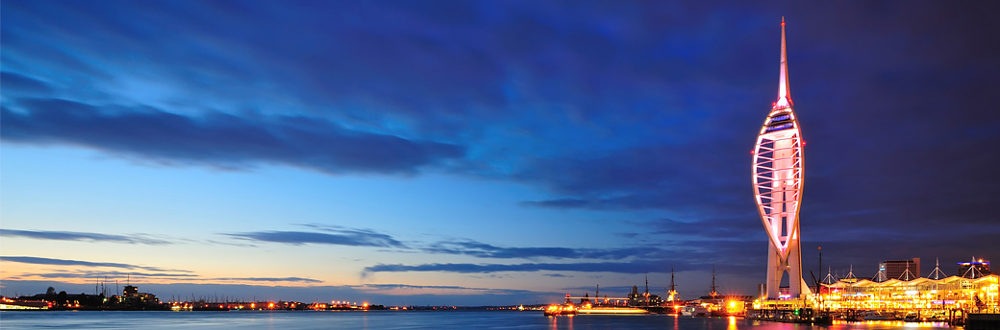

Overview
This website aims to give you an insight into my time at Portsmouth University so far. I will display the work that I have completed in Web Foundations along with how it was undertaken.

This website aims to give you an insight into my time at Portsmouth University so far. I will display the work that I have completed in Web Foundations along with how it was undertaken.
Portsmouth at Night
